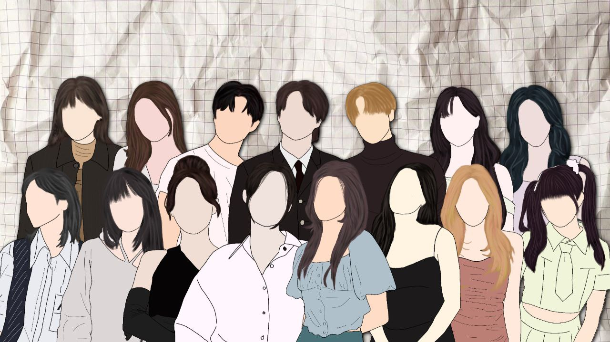

Selamat Datang di Markas Besar Gong!
Halo dan selamat datang!
Gong bukan sekadar grup biasa—kami adalah keluarga, tempat cerita-cerita tak terduga bermula. Dari obrolan receh sampai diskusi mendalam, dari tawa lepas hingga curhat tengah malam, semuanya ada di sini.
Di website ini, kamu bisa mengenal lebih dekat siapa kami, melihat momen-momen terbaik yang pernah terjadi, dan tentunya, merasakan sedikit dari keunikan yang membuat Gong begitu spesial.
Yuk, jelajahi lebih lanjut dan temukan keseruannya!
ABOUT GONG
Gong awalnya hanyalah sebuah grup chat yang terbentuk secara tidak sengaja. Bahkan, pada awalnya grup ini bernama "Bisti" sebelum akhirnya berganti nama menjadi "Gong". Nama ini dipilih karena setiap kali kami mengobrol, pembahasannya selalu tak terduga—penuh kejutan dan plot twist yang di luar ekspektasi.
Grup ini beranggotakan 15 orang dengan kepribadian yang beragam. Namun, Gong bukan sekadar tempat untuk mengobrol, melainkan sudah seperti keluarga. Di sini, kami berbagi segala hal—kebahagiaan, kesedihan, kemarahan, dan segala cerita lainnya. Apa pun yang terjadi, kami selalu ada untuk satu sama lain.
Lagu ini benar-benar definisi lagu yang cocok untuk 'Gong'
OUR PROFILE
Kendricx Sauven
"Hai, nama gua Kendricx Sauven atau orang-orang lebih kenal gua dengan nama Eric Cassius. Kendricx sama eric tetep satu orang kok, haha. Kalau kata orang-orang gua yang baru kenal pasti bilang gua anaknya cuek, padahal mah gak cuek kalau lu asik wkwk. Oh iya, yang terpenting gua ini ganteng, mana keren banget lagi. Gua adalah #1 Eunha's Boyfriend"
Let's chat! Tap here.
Agoy Wiratama
"Halo gua agoy gua suka tidur gua juga suka matcha kalo lu matcha enjoyers ayo temenan🤭, gua suka sana twice bini gua, gua ga terlalu suka makanan makanan yang ada daun bawangnya. gua suka nonton film, gua suka kulineran"
Let's chat! Tap here.
Damian Azrael D.
"hobi saya itu ada beberapa, mulai dari mendengarkan musik sampai ke badminton, cita-cita saya adalah masuk syurga 🤲, saya ini baik, ramah, sopan, santun, anti galau, dan juga rendah hati"
3 fakta tentang saya:
a.) penggemar miawaug
b.) kekasih mina twice.
c.) manusia
Let's chat! Tap here.
Moarvy Arciebiu
hai, aku biasa di panggil arcie cantik pacar mingyu Karna emang itu faktanya 🤭 aku biasanya sih di julukin anak tengil yang gabisa diem, mungkin karena emang aku bawel/ cerewet kali ya 😢 tapi aku gitu gitu juga pasti ngehibur, aku anaknya suka banget banget ngerecokin room chat orang/ group. kayak, hal itu tuh seru banget !!!! aku cinta banget sama gong, di gong aku selalu di nasehatin dan di buli 🙄 gong juga selalu ngebantu aku tentang hal hal yang aku gabisa, di gong ini aku selalu di anggap, aku ngelakuin ini itu selalu di tanggepin. gong udah kaya kesayanganku, rumahku, cinta banget aku sama gong, tetep bersama ya gong semoga kita selalu di beri kesempatan untuk terus bersama, ily more gong 💜
Let's chat! Tap here.
Serana Alea Aqisha
"Ayeya si cewe centil, selalu pengen buru buru punya pacar karna selalu ngerasain kesepian, kadang juga suka bikin orang orang ketawa, cantik juga cewenya hahai"
Let's chat! Tap here.
Kayleigh Anne
"perkenalkan nama ak kayleigh Anne suka di panggil kei, ket, panggil apa aja asal jgn ketiak😊 ak suka 4 sehat mark lee sempurna #markleehargamati, suka lany & daniel caesar, aylop biru n cinamorrol, suka nonton drachin aylof yiran jing cakep bgt pacaran yuk sayang🥺 suka main supersus mabar yuk dik"
Let's chat! Tap here.
Naura
"HAII AKU NAURA, aku bersyukur banget karna deket sama anak anak gong yang super duper baik walaupun kadang kaya ngeselin bener kaya tai tapi aku tetep sayang sama kalian, maaf ya enih agak alay dikit, semoga kita deket terus ya gong jangan sampai asing asinggg atau karna ada masalah antara kita malah asing jangan ya gong, semoga kita makin akrab lagi satu sama lain, ngomongin hal random di gongg dan makin banyak stiker nangis nya ya gonggg, iloyoo gongg"
Let's chat! Tap here.
Jagat Panjarwala
"Gua jagat, gua tipe yang ga suka menye" dan tudep. gua ga suka gua bilang dan sebaliknya, gua benci banget sma orang yang menye" depan gua jujur inimah. gua orangnya emosional bukan sekedar marah, tapi mulai dari seneng, sedih, bahagia semua dah pokoknya. gua ini kekasih jihyo, yang kaya jihyo 1 yaitu Park Ji-Hyo gada yang lain 😌😌"
Let's chat! Tap here.
Vior La Quela
"kenalin, gua disini sebagai vior, sebagian orang panggil gua pior, tapi banyak juga yang bikin nama gua jadi tambah unik, lucu wkwk, kebanyakan orang kenal gua cuman karena gua sering ajak cosplay, jangan salah gini gini gua duta cosplay sejati😎😎, banyak sebutan yg udah gua dapet dari sebagian orang, gua paling suka sama sebutan "presiden" wkwk"
Let's chat! Tap here.

Camillan Primrose
"Imup cantik baik hati tidak sombong pacar wonwoo, younghoon, sunwoo, eric, jeno, haechan, jaemin, lee dohyun, jae park, dowoon, songkang, hyunwook, bong jaehyun, zhen yuan, lin yi"
Let's chat! Tap here.

Shanata Atmaja
"hy ak nanat paling imut, lucu, baik hati, cantik, rajin menabung, tdk sombong dan kiyut sedunia, sejagat raya dn gt pokonya"
Let's chat! Tap here.

Livia Shacilia
Gua Livia Shacilia. dulunya gua Livia Sloanne, tapi gua ganti ke muse gua pas awal awal. Gua suka jaehyun, gua juga suka bgt sma durian. Gua orang nya so asik kalo udah nyaman sm seseorang, kadang gua matpik, kadang gua cerewet,
Let's chat! Tap here.

Laurén Wycliff
"hai, kenalin gw lauren. Tentunya orang baik hati n tidak sombong, imut 100%, rajin menabung, suka eskrim, no mie ayam no life! (naspad too), suka kucing tp geli klo pegang(:, pacarnya jungkook, eric, taehyung, mingyu, juyeon, scoups, lee dong wook, hyun wook, kim bum dsb wkwk uda ya segitu aja^"
Let's chat! Tap here.
OUR FAVE TRACKS
We're always down for good music, so here's what we're listening to. These songs are guaranteed to make you feel good.
"Gua suka banget lagu ini karena liriknya yang bisa dibilang simple tapi puitis, kata gua mah lo semua harus coba dengerin ini."
- Kendricx
"gua naro gong di masa-masa soalnya sesuai dengan beberapa lirik di lagu ini"
- Agoy
"saya suka lagu itu karena lagunya bagus dan juga enak didengar"
- Damian
"itu tuh lagu pas aku gi di posisi yg makna nya tuh sm kek lagu itu (dulu) aku cari aja yg makna nya gt ternyata ada lagu ini, eh malah suka terus suka nya kebawa sampe skrg skrg"
- Arcie
"aku suka lagu understand tuh kayak bener bener yang enak banget kalau di denger, paling mantap deh kalau di denger mah, terus juga makna nya agak masuk sama keadaan aku AHAHAHAHAHA"
- Serana
"lagu 13 by lany mendeskripsikan tentang seseorang yang mencoba untuk memperbaiki hubungan dengan pasangan nya, the reason why i really like this song cz gue rasa gue lumayan relate sm lagu ini, selain itu lagu nya enak didengar apalagi pas lo galau kangen mantan :))"
- keith
"gua suka karna lagu tu kaya relate sama gwah"
- Naura
"gua suka karena relate aja rasanya wkwk dan gua emang suka sama lagu-lagu nya chase atlantic sih jadi yaa semua lagunya suka"
- Jagat
"gua suka lagu ini tuh karena selalu bisa buat gua tenang, suara yang adem yang buat gua suka sama lagu ini, makna nya juga bikin gua makin suka, terkadang gua kalo lagi kangen sama bandung biasanya suka denger lagu ini, di lagu ini juga gua nyimpen seseorang yang ada di bandung, jadi ya kalo kangen selalu dengerin lagu ini"
- vior
"gua suka lagu ini soalnya lagunya asik dan kane banget"
- Camillan
- Shanata
"gua sebenernya ga terlalu tau tentang tame impala, tapi gua suka lagu lagu nya"
- Shacil
""
- lauren
OUR MOMENTS
Our treasure trove of memories.